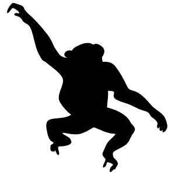
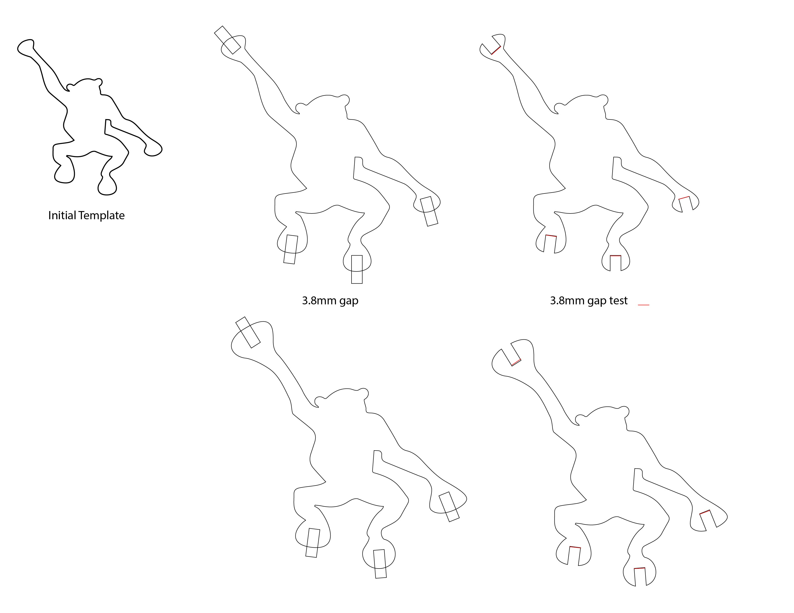
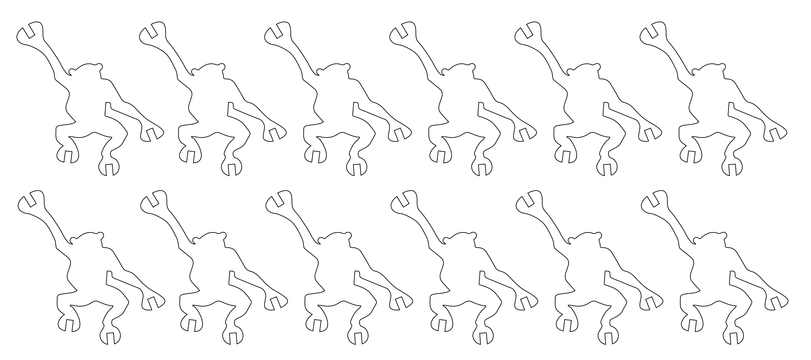

Assignment 1: Monkeys

What's more fun than a barrel of monkeys? An interconnected, laser-cut, press fit construction kit of monkeys!
I started by bringing in a .png file with the silhouette of a monkey in it to Illustrator. Thanks to CarStickers for the source image!

I traced the outline of the image in Illustrator using ImageTrace and adjusted the outline slightly to increase the size of the hands and feet. I also created rectangles that were as wide as the width of the cardboard I would be using (3.8mm) and overlaid them onto the outline of the monkey. I cut these notches out of the monkey and tested with a red line (with length = the width of the cardboard) to verify the sizing of everything. I realized some of the spots might be a bit too thin and unstable, so I enlarged the hands a bit to create more stability.

I duplicated the image to create 12 of them, changed the stroke width to .001pt, and then I was ready to print!

Attempt 1: I started on the printer with Power = 100%, Speed = 50%, and Frequency = 50% (or so I thought). I did a print but the cut wasn't going all the way through the cardboard. I ran the same cut twice and the monkeys fell out after that. However, the press fit was a little wide.
Attempt 2: I decreased the notch in the hands and feet to 3.7mm and cut again - this time with Power = 100%, Speed = 50%, and Freqency = 75%. The cut seemed even worse and I had to run it a second time - and I had trouble getting the shapes out of the cardboard since the cut still hadn't gone all the way through. When I punched a few out, they were still a bit wide. I decreased the notch in the hands and feet to 3.6mm.
I tried Power = 100%, Speed = 25%, and Frequency = 75%. Still a bad cut! Though the dimension of the notches were correct now. I knew something was off with the laser cutter settings and took a closer look. That's when I realized I had accidentally confused Power and Speed and was cutting everything at low power (50% and 25%)!
I reset to Power = 100%, Speed = 25% and Frequency = 50% and ran another cut. It went perfectly once I had the settings correct.
Finally, I had my monkeys - and they fit together perfectly!
Source File: Link
Thanks to Brooks Robinson for showing me how to insert a link into this page and Tanya Wang for helping me get up to speed on the laser cutter!